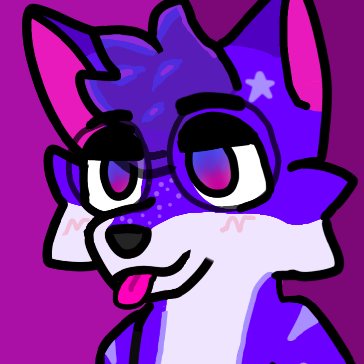

Route /docs/
Reference page for Scoofy lore, site facts, and future notes.
This tab is built like a little internal wiki. It can become your about page, character sheet, changelog, archive, or whatever structured information you want.

Scoofyscoofy.xyz / docsRoute /docs/
This tab is built like a little internal wiki. It can become your about page, character sheet, changelog, archive, or whatever structured information you want.
Current entries
Profile card
Scoofyx is the main creator identity, while Scoofy works as the more casual nickname. That mix keeps the site personal without giving up the stylized web persona.
World note
It makes the site feel bigger, like a universe with records and references instead of a single landing page.
Future use
Route note
This page uses a root-level HTML file, so local browsing and GitHub Pages hosting both stay simple and reliable.
Creator mode
You described the editing style as ADHD, autistic, meme-heavy, toony, and montage-driven. That is not a bug in the brand. It is part of the signature.
Editing DNA
The style works because it mixes animation energy, visual jokes, fast cuts, and weird internet references into something that still feels personal.
Influences
Mood ref
This sits here as a style influence reference, especially for furry creator energy and visual mood.
Coding side
Your private in-progress language deserves to exist in the site identity too, even if the repo is still cooking.
Visual identity
This makes the docs page feel more like a real creator archive instead of plain text.